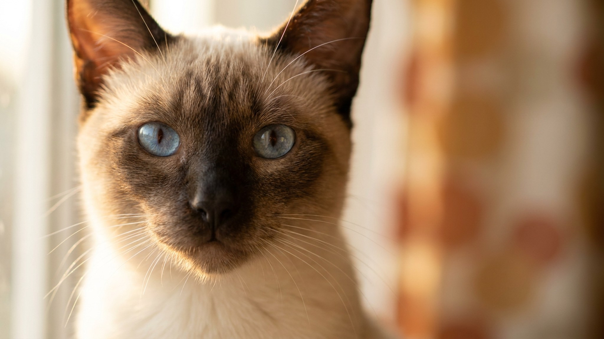

Если вы думали взять сиамскую, но хотели что-то поярче — вы уже нашли. Колор-пойнт короткошёрстный (Colorpoint Shorthair) вырос из сиамской, но получил расширенную палитру поинтов: рыжий, кремовый, черепаховый, табби. Темперамент при этом никуда не делся — всё та же разговорчивость, всё та же преданность. Только выглядит иначе.
🐾 Ваш питомец — колор-пойнт?
Заведите профиль в AnimaLife: приложение запомнит породу, возраст и вес и будет подсказывать по уходу именно для неё. Вопросы AI-ветеринару — круглосуточно и бесплатно.
Завести профиль → Завести в MAX →
У вас iPhone? AnimaLife есть в App Store
Официально Colorpoint Shorthair — самостоятельная порода, признанная CFA (Американская федерация кошек). Разница в одном: у классической сиамской стандарт допускает только четыре цвета поинтов — сил, блю, чоколет и лайлак. У колор-пойнта их более 20: рыжий (ред), кремовый (крим), черепаховый (тотти-пойнт), а также все табби-варианты (полосатые поинты).
Телосложение, голубые глаза, короткая шелковистая шерсть и острые уши — то же самое. По сути это сиамская в новых цветах.
Колор-пойнт — одна из самых общительных пород. Кошка ходит за хозяином, участвует в каждом деле, комментирует голосом. Молчаливой её не назовёшь: мяукает с интонацией, явно ожидая ответа, и продолжает диалог, пока её не выслушают.
Короткая шерсть колор-пойнта не требует сложного груминга. Раз в неделю мягкой щёткой — этого достаточно. В период линьки (весна, осень) чуть чаще, чтобы шерсть не оседала на диване.
Умная и энергичная кошка скучает быстро. Скука у неё проявляется голосом и деструктивным поведением. Решения простые:
Колор-пойнт подходит тем, кто хочет живого общения с кошкой, а не тихого соседа на диване. Лучший вариант — семья или одиночка, который много времени проводит дома. Идеален для людей, которым нравится голосистая общительная порода с яркой внешностью.
Не подойдёт тем, кто работает по 12 часов вне дома без второго питомца, любителям абсолютной тишины и тем, кто хочет кошку с независимым характером.
🐾 У вас колор-пойнт?
AnimaLife соберёт уход под породу: к каким болезням есть склонность, что проверять по возрасту, чем кормить и когда пора к врачу. Бесплатно, прямо в мессенджере.
Собрать план ухода → Собрать в MAX →
У вас iPhone? AnimaLife есть в App Store
🐾 Понравился разбор?
Подпишитесь на канал — каждый день разбираем по одному тревожному симптому у кошек и собак: что в пределах нормы, а когда пора к врачу. Подпишитесь, чтобы не пропустить разбор, который может спасти здоровье вашего питомца.
Материал носит информационный характер и не заменяет очную консультацию ветеринара.